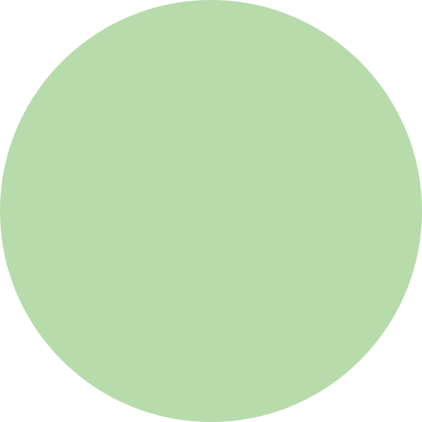
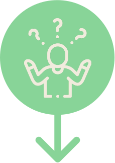

The Itch-Scratch Cycle
Scratching feels like relief — but it makes things worse.


Emotional Triggers
Your inner state affects your skin more than most people realise.
 Stress
Stress
Work pressure, difficult relationships, or life changes can activate your body's itch response — even before a visible flare appears.
Worry and anxious thoughts keep your nervous system on high alert, making itch signals harder to ignore and easier to act on.
 Tiredness
Tiredness
Fatigue reduces your ability to resist the urge to scratch and makes itch feel more intense and overwhelming.
When you're feeling down, itch can feel harder to ignore and harder to cope with — and the cycle becomes harder to break.
Why Itch Gets Worse at Night
Four reasons the darkness makes itch harder to handle.
Without the day's activity to occupy your mind, itch signals get your full, undivided attention.
Your body's natural anti-inflammatory cortisol drops overnight, reducing its suppression of itch.

Body TemperatureBed warmth raises your core temperature, which intensifies nerve itch signals in the skin.
 Skin Dryness
Skin Dryness
Skin loses moisture overnight — especially in heated bedrooms — worsening the itch barrier breakdown.

